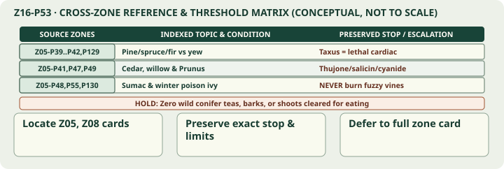

Z16-P53 · Field reference atlas · New manuscript
Minnesota Trees, Conifers and Lethal Yew, Cyanogenic Index
Cross-reference Z05 woody tree, shrub profiles (`Z05-P39`–`P56`) with Z08 wood materials while highlighting lethal Taxus yew, cyanogenic Prunus, and thujone cedar.
When it applies · Woody plant identification across Minnesota conifer and hardwood forests.
Equipment · Full offline reader (Z05, Z08), primary zone cards, and local emergency and agency references.

Actions
- Separate bundled 5-needle white pine (Z05-P42), pegged 4-sided spruce (Z05-P39), and white-striped blunt balsam fir (Z05-P40) sharply from flat-needled green-twigged lethal yew (Taxus spp., Z05-P129), whose taxine alkaloids cause fatal cardiac arrest.[A05, B10, B16]
- Preserve key woody-plant toxicity exclusions: northern white cedar thujone neurotoxicity (Z05-P41), cyanogenic Prunus cherry, plum pits and wilted leaves (Z05-P49), unstandardized willow, birch salicylate risks (Z05-P47), and wetland poison sumac vs upland red sumac (Z05-P48, Z05-P130).[A05, B12, B16, B21]
- Obey winter-twig poison-ivy urushiol cautions (never touch or burn fuzzy climbing vines, Z05-P55, Z05-P130) and zero live tree cutting, tapping, or bark stripping on public lands (Z05-P56, Z08-P36).[A05, A04, B12, R09]
Failure recognition · Brewing yew needles or cedar twigs, chewing cherry pits, or burning dormant poison-ivy vines causes cardiac arrest, cyanide toxicity, or severe lung burns.[B10, B12, B21]
Verify · Needle, twig anatomy, Taxus, Prunus, Toxicodendron exclusions, and no-live-tree-harm rules remain linked.[B12, B16, R09]
Stop or change course · Stop immediately on flat dark single conifer needles, red fleshy cups, wilted cherry foliage, or fuzzy climbing vines.[B10, B12]
Evidence and editorial notes
- A04 · Minnesota DNR · Minnesota Geology and Glacial History Overview (Current web edition)
- Section: Geological and natural-material cross-zone lookup · Conditions: Linking Z08 materials with Z02 shelter, Z03 fire, Z09 tools, and Z11 compass limits
Support: Material cross-references preserve dust/silica hazards, wet-rock spalling stops, iron-rock compass deflection, and public-land collecting prohibitions.
Limitations: Material summaries never imply structural load ratings or chemical cookware safety. · Conflicting evidence: None noted.
Editorial note: Anchors Z16 materials index. · Specialist reviewer: Geologist and materials reviewer
Primary source · checked 2026-11-25 - A05 · Bell Museum (UMN) · Minnesota Biodiversity Atlas (Current web edition)
- Section: Botanical and fungal cross-reference with permanent consumption HOLD · Conditions: Indexing Z05 species morphology, lookalikes, and Poison Control referrals
Support: Atlas botanical/fungal tables index accepted names, phenology, and lethal lookalikes solely for observation, hazard avoidance, and voucher documentation.
Limitations: No Z16 index entry may imply edibility or bypass Z05 multi-character and expert-review gates. · Conflicting evidence: None noted.
Editorial note: Preserves Z05 consumption HOLD inside Z16. · Specialist reviewer: Botanist and mycologist
Primary source · checked 2026-11-25 - B10 · National Capital Poison Center · Poisonous Plants and Berries Overview (Current web edition)
- Section: Poisonous plants, berries, and dose-dependent pediatric risk · Conditions: Household, trailside, and wild berries, seeds, and foliage
Support: Many attractive wild berries, seeds, and roots contain cardiac glycosides, alkaloids, or oxalates that cause rapid toxicity, especially in children.
Limitations: Never sample unknown plants; recognition and consumption suitability remain separate decisions. · Conflicting evidence: None noted.
Editorial note: Separates recognition from consumption. · Specialist reviewer: Clinical toxicologist and botanist
Primary source · checked 2026-11-25 - B12 · NIOSH / CDC · Poisonous Plants: Hemlock, Dermatitis, and Field Hazards (Current web edition)
- Section: Toxic plant dermatitis and hemlock contact/ingestion hazards · Conditions: Field work around poison ivy, poison sumac, wild parsnip, and hemlocks
Support: Urushiol oils in Toxicodendron species cause severe allergic contact dermatitis; burning vines aerosolizes toxic smoke that damages lungs.
Limitations: Never burn unknown vines or brush piles; wash exposed skin promptly with cool water and soap. · Conflicting evidence: None noted.
Editorial note: Covers Z05 contact/inhalation plant hazards. · Specialist reviewer: Occupational health and botanist
Primary source · checked 2026-11-25 - B16 · Minnesota DNR · Native Trees of Minnesota Identification Reference (Current web edition)
- Section: Native Minnesota trees: bark, buds, leaves, cones, and nuts · Conditions: Identifying oaks, pines, birches, maples, basswood, walnut, and spruce across seasons
Support: Reliable tree identification integrates leaf/needle arrangement, bud scales, bark pattern, fruit/cone structure, and habitat across seasons.
Limitations: Tree nuts and bark materials can require specific processing (e.g., tannin leaching) and remain on consumption HOLD until reviewed. · Conflicting evidence: None noted.
Editorial note: Anchors Z05 regional tree-food & bark profiles. · Specialist reviewer: Forestry botanist
Primary source · checked 2026-11-25 - B21 · USDA Forest Service · Ethnobotany, Wild Foods, and Conservation Precautions (Current web edition)
- Section: Ethnobotanical limits, preparation hazards, and permit rules · Conditions: Wild plant/fungus gathering ethics and toxicity processing limits
Support: Some traditionally used plants contain raw toxins (cyanogenic glycosides, oxalates, tannins, alkaloids) that require verified preparation or remain unsafe for sensitive groups.
Limitations: Historical ethnobotanical mentions are never modern clinical safety clearances; maintain consumption status WITHHELD until qualified review. · Conflicting evidence: None noted.
Editorial note: Enforces recognition-vs-consumption separation. · Specialist reviewer: Ethnobotanist and food toxicologist
Primary source · checked 2026-11-25 - R09 · Minnesota DNR · Minnesota State Park Rules and Resource Collecting Restrictions (Current web edition)
- Section: State park natural-feature protection · Conditions: Minnesota State Parks and Recreation Areas
Support: Removing rocks, minerals, soil, or live vegetation from Minnesota State Parks is prohibited to protect natural resources.
Limitations: Verify jurisdiction boundaries before picking up specimens even along shorelines or trails. · Conflicting evidence: None noted.
Editorial note: Bounds state-park material collection. · Specialist reviewer: Minnesota DNR resource manager
Primary source · checked 2026-11-25
Source lineage · New manuscript (Z16 P20 botanical index) · Classification · New manuscript.